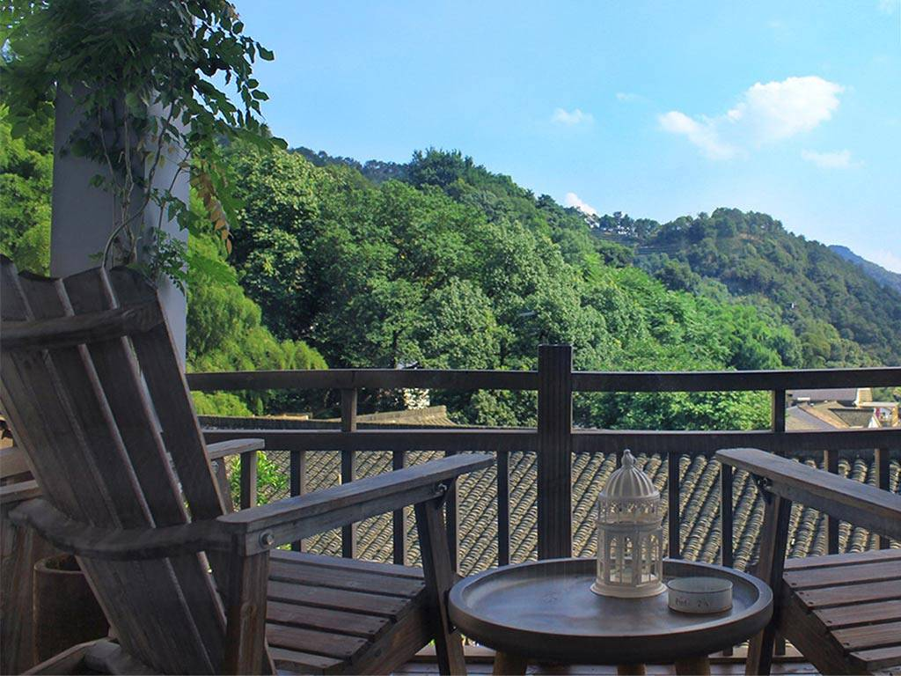
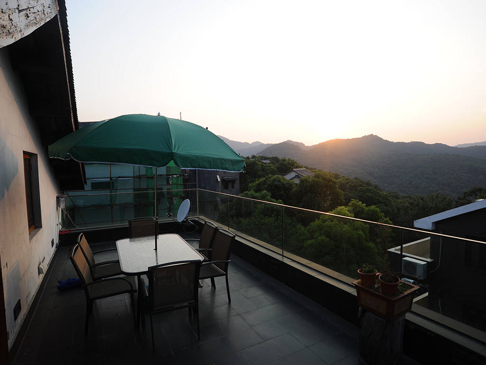
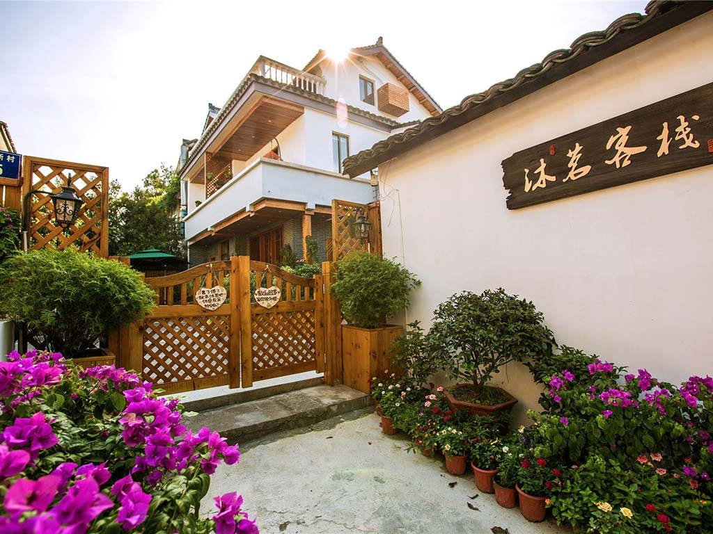
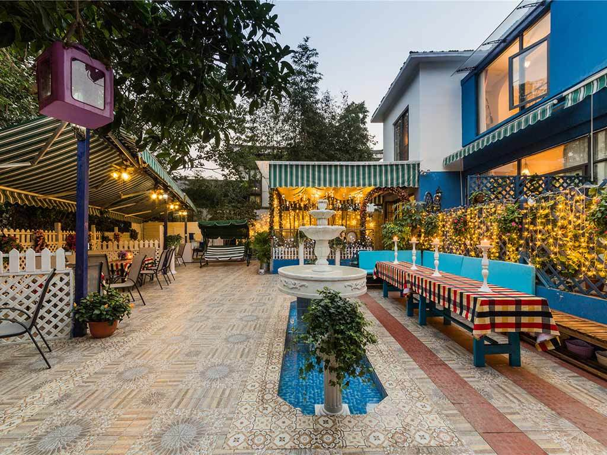
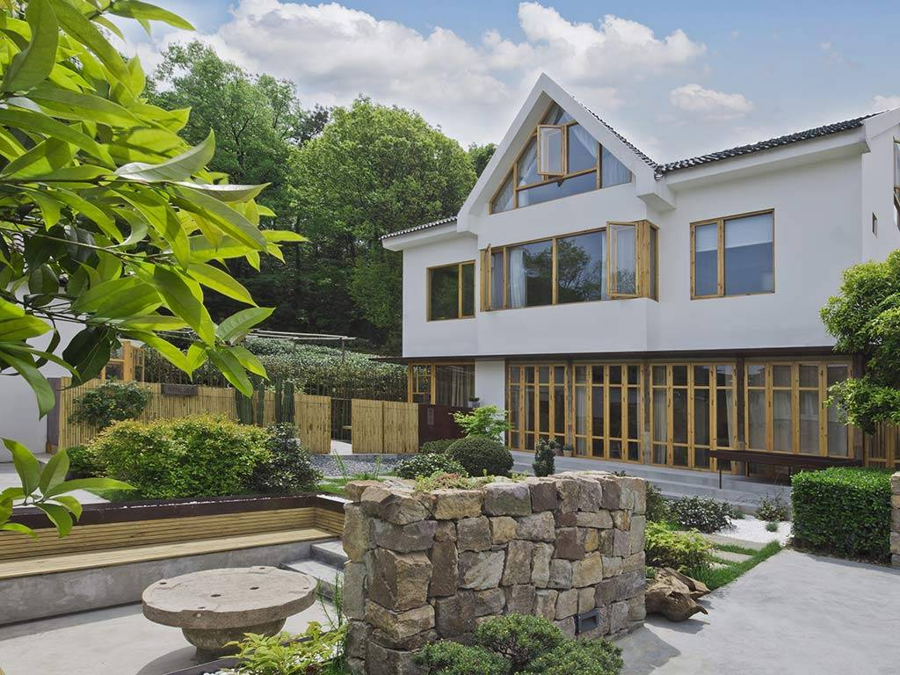
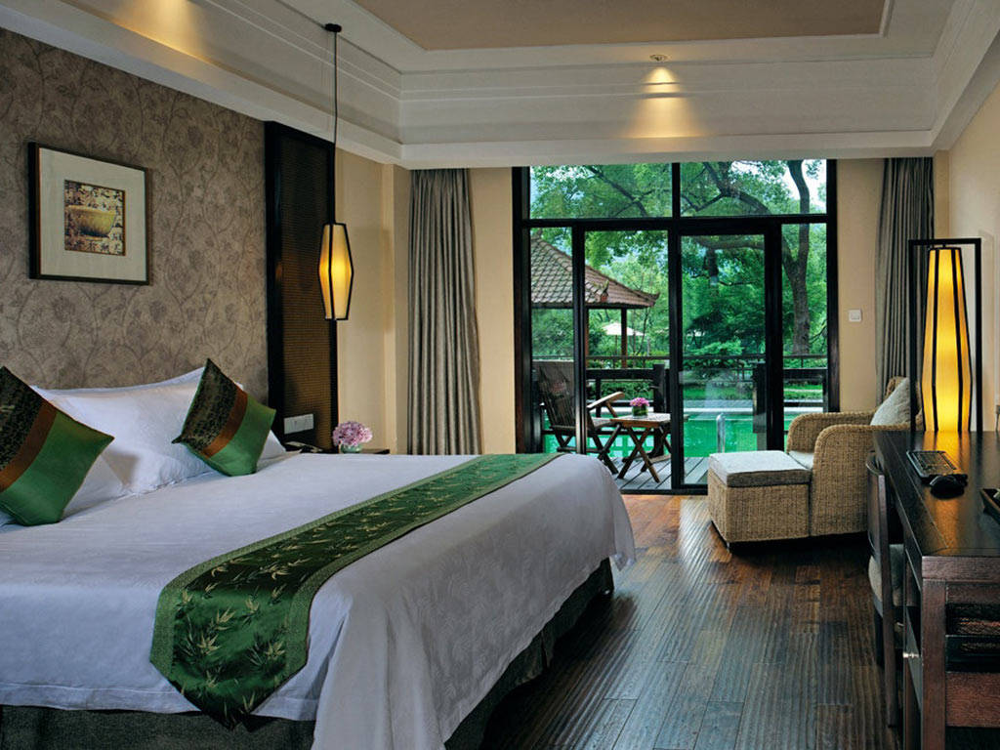
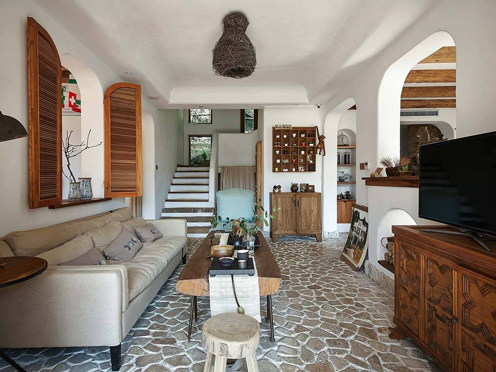
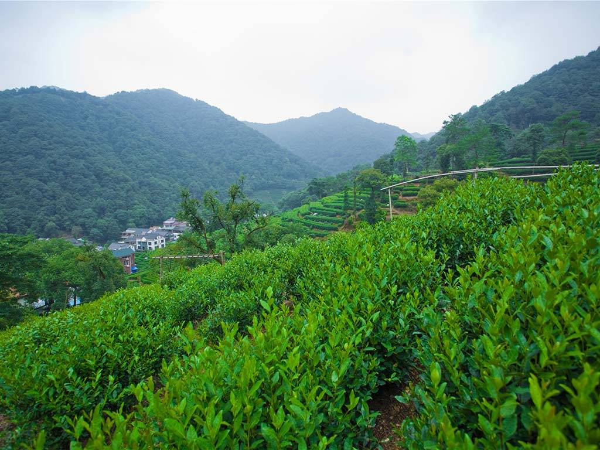

-
杭州清茶客栈
栈位于之江旅游度假区内，8间客房均以茶命名。闲时可以直接登后山茶园，或者徒步西湖十景的云溪竹径，这里山高坞深，竹茂林密，清晨黄昏，坞中常常凝云四起，好似仙境。
[西湖区]梅灵南路外大桥20号(近云栖竹径)
五云山 宋城 梅家坞
¥288起 去看看
Hotel
1
-

杭州泊客墅宿
比起西湖这里是闹中取静，比较适合自驾游或者爱品茶的人。酒店入口有个露台可以喝茶看远景，餐厅布置得很温馨，屋内风格比较前卫很有格调，五金卫浴都是科勒的很有质感，
[[西湖区]杨梅岭乾龙路88号(近满觉陇路,虎跑路)
于谦祠 杭州三台阁 慧因高丽寺
¥312起 去看看
Hotel
2
-

杭州西湖景区老翁家
老翁家就在在西湖满觉陇翁家山之顶，在那口老龙井的旁边。在翁家山的最高处，深吸一口清香的空气，欣赏绿茶山景，别有一番滋味。沏一杯清香透绿的龙井，听听龙井的传奇，何其美哉！
西湖区]杭州市西湖区西湖景区翁家山260号(近茶叶博物馆)
五于谦祠 中国茶叶博物馆 慧因高丽寺
暂无价格 去看看
Hotel
3
-

杭州沐茗客栈
客栈位于着名的狮峰龙井茶产区，周围都是一大片茶园，客栈还提供免费的自行车，徜徉在山林小路，呼吸新鲜空气，放松心情的好去处。
[西湖区]杭州市 西湖区 龙井路双峰新村95号沐茗客栈
五于谦祠 中国茶叶博物馆 慧因高丽寺
¥267起 去看看
Hotel
4
-

杭州如果小院
室外院子充满地中海风，室内装饰很有小资情调，紧邻茶叶博物馆。在一片碧绿的茶园之间住在这样一幢蓝白相间的地中海别墅里，充满了小情小调。
[西湖区]杭州市 西湖区 双峰新村34号(中国茶叶博物馆)
茅家埠 中国茶叶博物馆 郭庄
¥480起 去看看
Hotel
5
-

杭州栖间堂艺术酒店
酒店被龙井的一片茶园所包围，7间客房时尚精致。可以将龙井茶田和西湖边的群山美景尽收眼底。喝茶可以去“问茶”，吃饭可以去“绿茶”；睡觉还可以闻着茶香
[西湖区]西湖区 龙井路里鸡笼山53号
中国茶叶博物馆 茅家埠 慧因高丽寺
暂无价格 去看看
Hotel
6
-

杭州雷迪森龙井庄园
酒店以茶文化为主题，走在茶园小道间，寻访茶的踪迹，看阳光倾洒下来，呼吸空气中弥漫的诱人茶香，隐藏其中的龙井雷迪森庄园会让你恋上这微醺的滋味。
西湖区]龙井路里鸡笼山86号(近浙江辛亥革命纪念馆,与五老峰隧道交界)
五于谦祠 中国茶叶博物馆 慧因高丽寺
¥1274起 去看看
Hotel
7
-

奢野一宅(杭州灵隐寺店)
这里隐秘于山野之中，拥有极其隐蔽的前、后两个大花园，更有在景区内为数不多的自家龙井茶叶种植茶园。距离灵隐寺也比较近，步行十分钟就到。散漫的时光就这样随遇而安吧。
[西湖区]杭州西湖区灵隐支路白乐桥255号(近灵溪隧道)
杭州仁寿山公园 杭州飞来峰 灵峰探梅
¥880起 去看看
Hotel
8
-

杭州云廊小庐别院
坐落在茶山环抱的梅家坞，站在云廊阳台上，放眼望去，层叠的龙井茶，满眼的绿色扑面而来，飘着晨露，含着清香，沁人心脾。晨起雾时，更具别样，仿佛置身于云廊中，似真如梦。
[西湖区]梅家坞十里琅珰176号 近梅家坞周总理纪念室( 西湖风景区及灵隐度假区)
梅家坞 龙井村 五云山
¥299起 去看看
Hotel
9